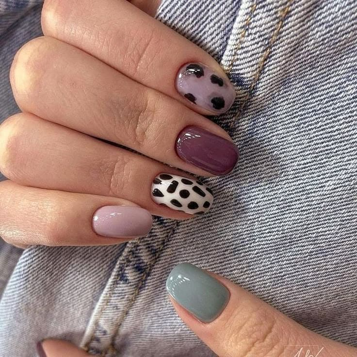
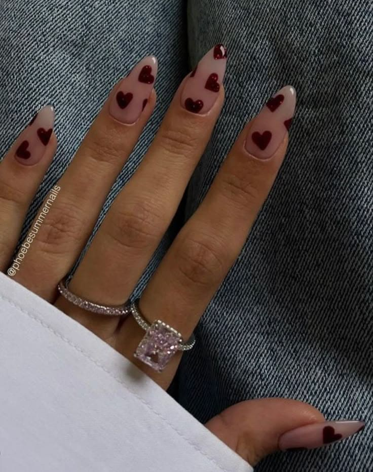
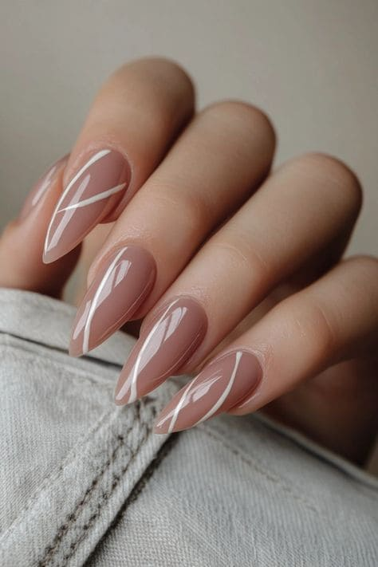

Estética
Creemos que cada persona merece sentirse radiante, tanto por fuera como por dentro. Por eso, ofrecemos una gama exclusiva de tratamientos faciales y corporales diseñados para cuidar tu piel, realzar tu naturalidad y brindarte momentos de relajación que transforman.
Tratamientos corporales Tratamientos faciales ManicuraTratamientos corporales
Copas colombianas
Es un procedimiento estético que busca mejorar la apariencia y el tamaño de los glúteos.
Beneficios
🔥 Tonifica y fortalece los glúteos.
🔥 Mejora la circulación local.
🔥 Activa el sistema linfático.
🔥 Reduce la flacidez y la grasa localizada.
🔥 Combate la celulitis y mejora la apariencia de la piel.
Contraindicaciones:
❌ Varices, heridas o piel sensible.
❌ Personas con problemas de coagulación o trombosis.
¿Cuanto tiempo dura la sesión?
El tiempo de duración de cada sesión es de 60 min.
Vacumterapía
La vacuum terapia (o terapia de vacío) es una técnica no invasiva que utiliza succión controlada para estimular la circulación sanguínea, mejorar el drenaje linfático y promover la regeneración de tejidos.
Beneficios:
🔥 Combate la celulitis
🔥 Mejora la flacidez y la piel de naranja.
🔥 Moldea el cuerpo.
🔥 Aumenta el flujo sanguíneo.
🔥 Rompe depósitos de grasa.
🔥 Estimula la producción de colágeno.
Contraindicaciones:
❌ Varices graves o trombosis.
❌ Heridas abiertas o infecciones en la piel.
❌ Embarazo (en zonas como abdomen o pelvis).
❌ Enfermedades cardiovasculares no controladas.
¿Cuanto tiempo dura la sesión?
El tiempo de duración de cada sesión es de 60 min.
Electrodos
Electroestimulación es una técnica no invasiva que utilizan corrientes eléctricas de baja frecuencia para estimular músculos, nervios y tejidos, con fines de reducción de grasa, tonificación y mejora de la piel.
Beneficios
🔥 Reducción de grasa localizada
🔥 Las corrientes rompen las células grasas (adipocitos), facilitando su eliminación por el sistema linfático.
🔥 Tonificación muscular (Ideal para glúteos, abdomen y brazos sin ejercicio intenso)
🔥 Estimulan la producción de colágeno y elastina para tensar la piel y reducir arrugas.
🔥 Activan la circulación y reducen retención de líquidos
🔥 Regenera tejidos mediante la activación de fibroblastos.
Contraindicaciones
❌ Embarazo.
❌ Marcapasos o problemas cardíacos.
❌ Epilepsia.
❌ Inflamaciones o heridas abiertas.
❌ Cáncer (dependiendo del caso).
¿Cuanto dura la sesión?
El tiempo de duración de cada sesión es de 30 min. por zona
Radiofrecuencia
Es un tratamiento no invasiva que utiliza ondas electromagnéticas de alta frecuencia para generar calor controlado en las capas profundas de la piel (dermis e hipodermis). Este calor estimula la producción de colágeno y elastina, logrando efectos como reafirmación, reducción de arrugas y moldeamiento corporal.
Beneficios
🔥 Reafirma la piel; reduce flacidez en rostro, cuello, brazos, abdomen y muslos.
🔥 Elimina grasa localizada
🔥 Mejora la circulación y el drenaje linfático; disminuye celulitis y retención de líquidos; mejora la textura de "piel de naranja".
🔥 Rejuvenecimiento facial; reduce líneas de expresión y óvalo facial definido.
🔥 Cicatrización de estrías; regenera tejidos dañados.
Contraindicaciones
❌ Embarazo.
❌ Marcapasos o implantes metálicos.
❌ Enfermedades autoinmunes o cáncer activo.
❌ Piel con heridas o infecciones.
¿Cuanto dura la sesión?
El tiempo de duración de cada sesión es de x min. por zona
Depilación definitiva
¿Que es?
Es un método que utiliza tecnología de luz para eliminar el vello de raíz de forma permanente o semipermanente. A diferencia de la depilación tradicional (como la cera o la rasuradora), este tratamiento destruye el folículo piloso, reduciendo progresivamente el crecimiento del vello.
¿Cómo funciona?
Se aplica un haz de luz (láser o IPL) sobre la piel, que es absorbido por la melanina (pigmento del vello). La luz se convierte en calor, quemando el folículo piloso y dañando su capacidad de producir nuevo vello. Con varias sesiones, el vello se vuelve más fino, claro y escaso, hasta dejar de crecer.
Beneficios
🔥 Resultados duraderos (hasta un 90% de reducción).
🔥 Piel más lisa sin vellos encarnados.
🔥 Rápido (sesiones de 15-60 minutos según la zona).
🔥 Menos doloroso que la cera (similar a un pellizco suave).
Contraindicaciones
❌ Mujeres embarazadas o en lactancia.
❌ Personas con infecciones en la piel (heridas, herpes).
❌ Piel muy bronceada (riesgo de manchas).
❌ Alergias a la luz (fotosensibilidad).
¿Cuántas sesiones se necesitan?
6 a 8 sesiones (cada 4-6 semanas) para eliminar el vello activo. Sesiones de mantenimiento cada 6-12 meses (según la persona).
💡 ¿Por qué tantas sesiones? Porque el vello crece en ciclos, y el láser solo afecta los folículos en fase activa.
Cuidados después de la sesión
Evitar sol, calor y ejercicio 24-48 horas.
Usar protector solar alto (SPF 50+).
No rasurar ni depilar con cera entre sesiones (solo afeitado).
Masajes
Son técnicas manuales o instrumentales que aplican presión, movimientos y estiramientos sobre los músculos, tejidos blandos y articulaciones del cuerpo. Su objetivo principal es aliviar tensiones, mejorar la circulación, promover la relajación y tratar dolencias físicas o emocionales.
Beneficios
✔ Alivian dolores musculares y articulares (ej: lumbalgia, cervicalgia).
✔ Mejoran la circulación sanguínea y linfática.
✔ Reducen estrés y ansiedad (liberan endorfinas).
✔ Ayudan en la rehabilitación de lesiones.
✔ Favorecen la eliminación de toxinas.
✔ Mejoran la calidad del sueño.
Descontracturantes
Los masajes descontracturantes se caracterizan por aliviar contracturas musculares a través de presiones más profundas, con el fin de deshacer nudos y mejorar la movidad.
Relajantes
Los masajes relajantes son una tecnica para reducir el estrés y la ansiedad a través de moviemientos suaves y suaves, con una presión ligera; ayudando a mejorar el sueño y equilibrar el sistema nervioso.
Deportivos
Los masajes deportivos tienenel fin de prevenir o tratar lesiones en atletas usando técnicas de estiramiento, fricción rapida o drenajes; reduciendo asi la fatiga muscular y acelerar la recuperacion post-entrenamiento.
Tratamientos faciales
Radiofrecuencia facial
Es un tratamiento estético no invasivo que utiliza ondas electromagnéticas para generar calor controlado en las capas profundas de la piel.
✔ Reafirma y reduce flacidez en mejillas, cuello, mandíbula (efecto "lifting")
✔ Rellena arrugas: Disminuye líneas de expresión (patas de gallo, surcos nasogenianos).
✔ Mejora textura cerrando poros, unificando el tono y aumentando la luminosidad.
Punta de diamante
La punta de diamante es un dispositivo estético utilizado en tratamientos faciales para exfoliar la piel, eliminar células muertas y estimular la producción de colágeno. La punta de diamante se desliza suavemente sobre la piel, eliminando capas superficiales de células muerta, mejorando la circulación y oxigenación de la piel.
Beneficios
✔ Renovación celular: Piel más suave y luminosa.
✔ Reduce arrugas finas y líneas de expresión.
✔ Disminuye manchas y marcas de acné.
✔ Unifica el tono y textura de la piel.
✔ Prepara la piel para otros tratamientos (peelings químicos, radiofrecuencia, etc.).
✔ No usa químicos, es seguro para pieles sensibles.

Belleza pestañas y cejas
Lifting de pestañas
El lifting de pestañas es un tratamiento estético semipermanente que levanta, curva y da volumen a las pestañas naturales sin necesidad de extensiones. Es ideal para quienes buscan mirada más abierta y expresiva con un efecto natural.
Efecto duradero (4–6 semanas, hasta que caigan las pestañas naturales).
Cuidados Después del Tratamiento

Evitar mojar las pestañas las primeras 24 horas.
No usar máscara de pestañas los primeros 2 días.
No frotar los ojos.
Perfilado de cejas
El perfilado de cejas es un tratamiento que busca diseñar, dar forma y armonizar las cejas según el rostro de cada persona.
Manos
En nuestro espacio tenemos para ofrecerte los siguientes servicios para la belleza de tus manos y pies:
Esmaltado semipermanente
Da color intenso y durabilidad hasta 21 días.
Capping gel
Fortalece y protege tus uñas naturales
Esculpidas
Extiende, protege y luce tus uñas naturales.
Esculpidas gel (largo 1 y 2)
Soft gel
Todos los tratamientos tienen incluidos 2 diseños por mano (en caso de ser un trabajo realizado previamente en el local, el retiro también será incluido).